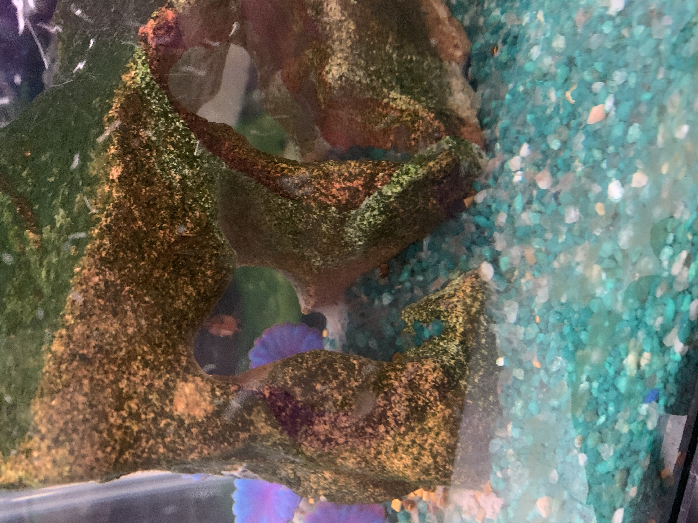

Here is a page for ME. Given that the home page was all about Siming I feel that I deserve my own page. I was originally a gift from Siming's brother's friend whose name was Sean. Sean had a BUNCH of fish, so giving me and my 4 tankmates to Siming's family wasn't very hard. I'm about 3 years old, and I only have 2 of those 4 tankmates remaining -- the other two died because of water quality issues.
Below is my third tankmate, the one not in the photo on the homepage.
